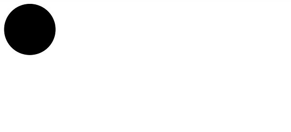
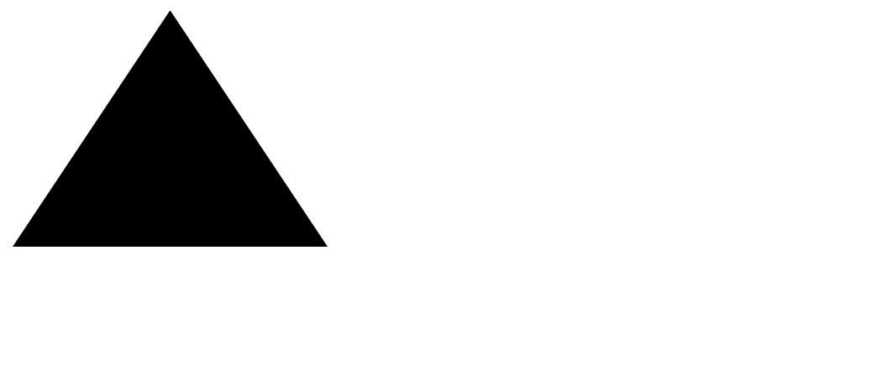
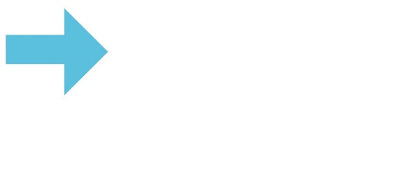
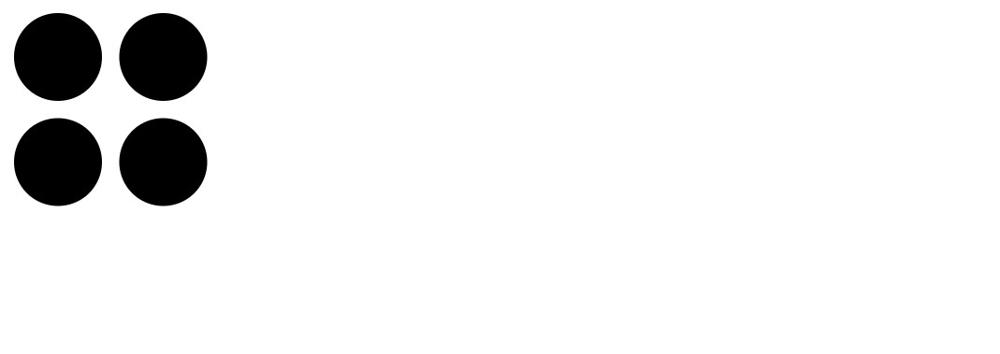

CSSで作図する
CSSで作図ができる！
Webページを作成するときに細かいパーツをCSSを使って表示することができます。四角や丸の図形からちょっとしたアイコンまで作ることができるので、わざわざ画像を使用しなくもCSSで表現することが可能です。
ここでは基本的な作図を紹介します。
四角
【HTML】
【CSS】
.square {
width: 100px;
height: 100px;
background: black;
}
丸
【HTML】
【CSS】
.circle {
width: 100px;
height: 100px;
background: black;
border-radius: 50px;
}

三角
【HTML】
【CSS】
.triangle {
width: 0px;
height: 0px;
background: transparent;
border-bottom: 150px solid black;
border-left: 100px solid transparent;
border-right: 100px solid transparent;
}

応用① 疑似要素
beforeやafterなどの疑似要素を使用することで1つのHTML要素で複数の図形を扱えます。
【HTML】
【CSS】
.arrow {
display:inline-block;
height:40px;
width:80px;
background-color:#5bc0de;
position:relative;
top:40px;
}
.arrow:before {
position:absolute;
content:"";
width:0;
height:0;
border:60px solid transparent;
border-left:60px solid #5bc0de;
left:80px;
top:-37px;
}

応用② box-shadow
box-shadowを使用することで図形を使い回しすることができます。
【HTML】
【CSS】
.four-circle {
width: 50px;
height: 50px;
border-radius: 25px;
background: black;
box-shadow: 60px 0, 0 60px, 60px 60px;
}

参考サイト
Qiita：https://qiita.com/yaegaki/items/a1e518d16be9b85479b4
TechAcademyマガジン：https://techacademy.jp/magazine/9401